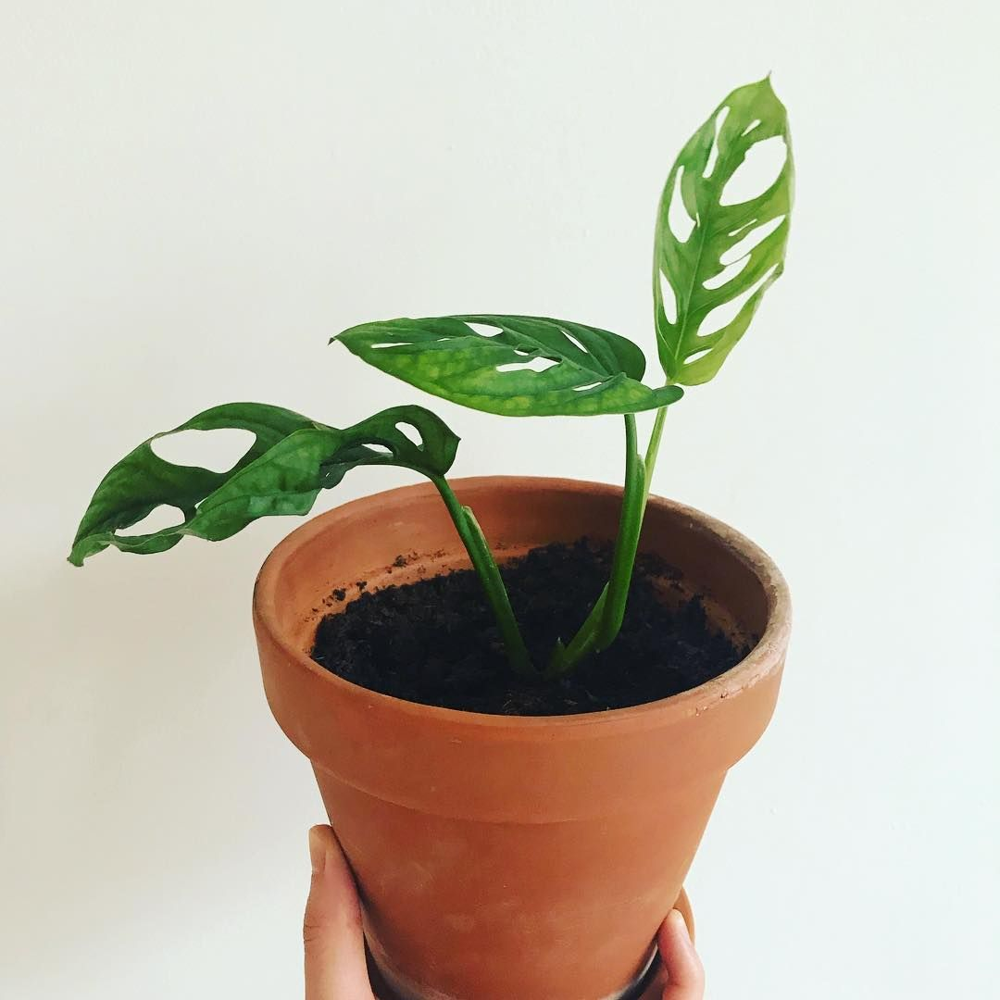

Leuk dat je kiest voor dit stekje!

Deze Monstera Obliqua stek is ook bekend als Monstera Monkey Mask,
vanwege de gaten in de bladeren. Deze plant groeit oorspronkelijk
in het tropisch regenwoud. Deze Monstera doet het even goed op
een lichte als op een schaduwrijke plaats. Direct zonlicht kun
je het beste vermijden.